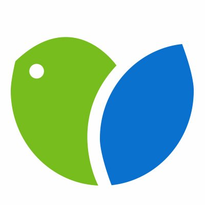
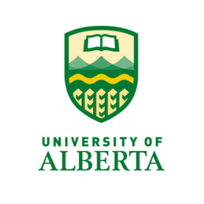

Kyle Androschuk
About
I am a fifth year computer science student at the University of ALberta, planned to graduate in June of 2021. I am also currently employed at the Women and Children's Health Research Institute (WCHRI) as a study programmer / Computer Science support student. I live in Edmonton, Alberta Canada with my family and my dog, Riley. My hobbies include programming, video games, and playing guitar and piano.
Professional History
My academic career as a computer science student has given me ample opportunity to work on noteworthy projects. For example, I helped develop a memory matching game for VibrantMinds in an effort to help aid Alzheimer's research. Additionally, I am currrently working on an API oriented social media site as a project for my CMPUT 404 class. I have been employed in a variety of work environments, including kitchen / bar staff at the World Water Park (WWP), a summer camp counselor / caretaker for Children's Autism Services of Edmonton (CASE), and a Study Programmer at WCHRI.
What I can offer
My wide academic and professional background has given me a variety of skills and qualities I can offer. My time at the U of A and WCHRI has sharpened my ability write software and to think critically. Working at CASE and WWP has given me the ability to work effectively with people, with clients / customers, and the ability to work under pressure. My most important assets however, is my ability to learn new things, and to adapt to a particular work environment. If I do not know how to something, I will not rest until I know how to proceed.